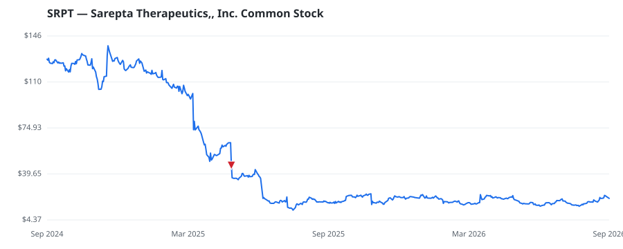

bullish · bearish · n/a — dots: price>SMA10 · SMA10>SMA50 · SMA50>SMA200 · up>down volume (20d)
Pharmaceuticals & Biotech · small cap

Sarepta Therapeutics Inc is a commercial-stage biopharmaceutical company focused on the discovery and development of RNA-targeted therapies, gene therapies, and other genetic medicines for rare diseases, particularly neuromuscular disorders. The company has developed approved treatments for Duchenne muscular dystrophy, including EXONDYS 51, VYONDYS 53, AMONDYS 45, and ELEVIDYS, and is advancing additional therapeutic candidates for neuromuscular and other rare diseases. The company operates in one segment: discovering, developing, manufacturing, and delivering therapies to patients with rare d PHARMACEUTICAL PREPARATIONS · website
| Revenue | $2.2B | Net income | $-713.4M |
|---|---|---|---|
| Operating income | $-699.8M | Diluted EPS | $-7.13 |
| Assets | $3.3B | Equity | $1.1B |
| Fund | Fund alpha vs SPY | Position | % of book |
|---|---|---|---|
| Privium Fund Management B.V. | +24% | $2M | 0.5% |
Hedge data: SEC EDGAR 13F · ranked funds beat SPY in >50% of their quarters · fund alpha = mirror-portfolio return minus SPY.